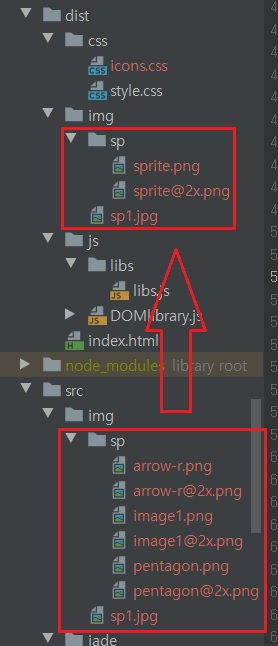

위와 같은 준비들이 끝나면 준비는 끝났습니다.
gulp 또는 gulp SpriteAndImgCompress 명령어를 입력합니다.
(SpriteAndImgCompress 함수는 export 되어있으므로 외부에서 사용이 가능합니다.)

그러면 위와 같이 src/img/sp 에 있던 파일들이 dist/img/sp 에 처럼 스프라이트 파일로 합쳐진 것을 확인하실 수 있습니다.
레티나 모니터를 대비한 @2x 이미지는 @2x이미지로, 아닌 1배수 이미지는 그냥 sprite.png로 파일이 출력됨을 볼 수 있습니다.
그리고 _sprite.scss 파일을 보면,
// SCSS variables are information about icon's compiled state, stored under its original file name
//
// .icon-home {
// width: $icon-home-width;
// }
//
// The large array-like variables contain all information about a single icon
// $icon-home: x y offset_x offset_y width height total_width total_height image_path;
//
// At the bottom of this section, we provide information about the spritesheet itself
// $spritesheet: width height image $spritesheet-sprites;
$arrow-r-name: 'arrow-r';
$arrow-r-x: 0px;
$arrow-r-y: 172px;
$arrow-r-offset-x: 0px;
$arrow-r-offset-y: -172px;
$arrow-r-width: 140px;
$arrow-r-height: 71px;
$arrow-r-total-width: 384px;
$arrow-r-total-height: 243px;
$arrow-r-image: '../img/sp/sprite.png';
$arrow-r: (0px, 172px, 0px, -172px, 140px, 71px, 384px, 243px, '../img/sp/sprite.png', 'arrow-r', );
$image1-name: 'image1';
$image1-x: 229px;
$image1-y: 0px;
$image1-offset-x: -229px;
$image1-offset-y: 0px;
$image1-width: 155px;
$image1-height: 148px;
$image1-total-width: 384px;
$image1-total-height: 243px;
$image1-image: '../img/sp/sprite.png';
$image1: (229px, 0px, -229px, 0px, 155px, 148px, 384px, 243px, '../img/sp/sprite.png', 'image1', );
$pentagon-name: 'pentagon';
$pentagon-x: 0px;
$pentagon-y: 0px;
$pentagon-offset-x: 0px;
$pentagon-offset-y: 0px;
$pentagon-width: 227px;
$pentagon-height: 170px;
$pentagon-total-width: 384px;
$pentagon-total-height: 243px;
$pentagon-image: '../img/sp/sprite.png';
$pentagon: (0px, 0px, 0px, 0px, 227px, 170px, 384px, 243px, '../img/sp/sprite.png', 'pentagon', );
$arrow-r-2x-name: 'arrow-r@2x';
$arrow-r-2x-x: 0px;
$arrow-r-2x-y: 344px;
$arrow-r-2x-offset-x: 0px;
$arrow-r-2x-offset-y: -344px;
$arrow-r-2x-width: 280px;
$arrow-r-2x-height: 142px;
$arrow-r-2x-total-width: 768px;
$arrow-r-2x-total-height: 486px;
$arrow-r-2x-image: '../img/sp/sprite@2x.png';
$arrow-r-2x: (0px, 344px, 0px, -344px, 280px, 142px, 768px, 486px, '../img/sp/sprite@2x.png', 'arrow-r@2x', );
$image1-2x-name: 'image1@2x';
$image1-2x-x: 458px;
$image1-2x-y: 0px;
$image1-2x-offset-x: -458px;
$image1-2x-offset-y: 0px;
$image1-2x-width: 310px;
$image1-2x-height: 296px;
$image1-2x-total-width: 768px;
$image1-2x-total-height: 486px;
$image1-2x-image: '../img/sp/sprite@2x.png';
$image1-2x: (458px, 0px, -458px, 0px, 310px, 296px, 768px, 486px, '../img/sp/sprite@2x.png', 'image1@2x', );
$pentagon-2x-name: 'pentagon@2x';
$pentagon-2x-x: 0px;
$pentagon-2x-y: 0px;
$pentagon-2x-offset-x: 0px;
$pentagon-2x-offset-y: 0px;
$pentagon-2x-width: 454px;
$pentagon-2x-height: 340px;
$pentagon-2x-total-width: 768px;
$pentagon-2x-total-height: 486px;
$pentagon-2x-image: '../img/sp/sprite@2x.png';
$pentagon-2x: (0px, 0px, 0px, 0px, 454px, 340px, 768px, 486px, '../img/sp/sprite@2x.png', 'pentagon@2x', );
$spritesheet-width: 384px;
$spritesheet-height: 243px;
$spritesheet-image: '../img/sp/sprite.png';
$spritesheet-sprites: ($arrow-r, $image1, $pentagon, );
$spritesheet: (384px, 243px, '../img/sp/sprite.png', $spritesheet-sprites, );
$retina-spritesheet-width: 768px;
$retina-spritesheet-height: 486px;
$retina-spritesheet-image: '../img/sp/sprite@2x.png';
$retina-spritesheet-sprites: ($arrow-r-2x, $image1-2x, $pentagon-2x, );
$retina-spritesheet: (768px, 486px, '../img/sp/sprite@2x.png', $retina-spritesheet-sprites, );
// These "retina group" variables are mappings for the naming and pairing of normal and retina sprites.
//
// The list formatted variables are intended for mixins like `retina-sprite` and `retina-sprites`.
$arrow-r-group-name: 'arrow-r';
$arrow-r-group: ('arrow-r', $arrow-r, $arrow-r-2x, );
$image1-group-name: 'image1';
$image1-group: ('image1', $image1, $image1-2x, );
$pentagon-group-name: 'pentagon';
$pentagon-group: ('pentagon', $pentagon, $pentagon-2x, );
$retina-groups: ($arrow-r-group, $image1-group, $pentagon-group, );
// The provided mixins are intended to be used with the array-like variables
//
// .icon-home {
// @include sprite-width($icon-home);
// }
//
// .icon-email {
// @include sprite($icon-email);
// }
//
// Example usage in HTML:
//
// `display: block` sprite:
// <div class="icon-home"></div>
//
// To change `display` (e.g. `display: inline-block;`), we suggest using a common CSS class:
//
// // CSS
// .icon {
// display: inline-block;
// }
//
// // HTML
// <i class="icon icon-home"></i>
@mixin sprite-width($sprite) {
width: nth($sprite, 5);
}
@mixin sprite-height($sprite) {
height: nth($sprite, 6);
}
@mixin sprite-position($sprite) {
$sprite-offset-x: nth($sprite, 3);
$sprite-offset-y: nth($sprite, 4);
background-position: $sprite-offset-x $sprite-offset-y;
}
@mixin sprite-image($sprite) {
$sprite-image: nth($sprite, 9);
background-image: url(#{$sprite-image});
}
@mixin sprite($sprite) {
@include sprite-image($sprite);
@include sprite-position($sprite);
@include sprite-width($sprite);
@include sprite-height($sprite);
}
// The `retina-sprite` mixin sets up rules and a media query for a sprite/retina sprite.
// It should be used with a "retina group" variable.
//
// The media query is from CSS Tricks: https://css-tricks.com/snippets/css/retina-display-media-query/
//
// $icon-home-group: ('icon-home', $icon-home, $icon-home-2x, );
//
// .icon-home {
// @include retina-sprite($icon-home-group);
// }
@mixin sprite-background-size($sprite) {
$sprite-total-width: nth($sprite, 7);
$sprite-total-height: nth($sprite, 8);
background-size: $sprite-total-width $sprite-total-height;
}
@mixin retina-sprite($retina-group) {
$normal-sprite: nth($retina-group, 2);
$retina-sprite: nth($retina-group, 3);
@include sprite($normal-sprite);
@media (-webkit-min-device-pixel-ratio: 2),
(min-resolution: 192dpi) {
@include sprite-image($retina-sprite);
@include sprite-background-size($normal-sprite);
}
}
// The `sprites` mixin generates identical output to the CSS template
// but can be overridden inside of SCSS
//
// @include sprites($spritesheet-sprites);
@mixin sprites($sprites) {
@each $sprite in $sprites {
$sprite-name: nth($sprite, 10);
.#{$sprite-name} {
@include sprite($sprite);
}
}
}
// The `retina-sprites` mixin generates a CSS rule and media query for retina groups
// This yields the same output as CSS retina template but can be overridden in SCSS
//
// @include retina-sprites($retina-groups);
@mixin retina-sprites($retina-groups) {
@each $retina-group in $retina-groups {
$sprite-name: nth($retina-group, 1);
.#{$sprite-name} {
@include retina-sprite($retina-group);
}
}
}
위와 같은 내용들이 자동으로 생성된 것을 볼 수 있습니다.
너무 걱정하지 맙시다. 위에 비록 영어로 되어있긴 하지만 사용 방법이 모두 다 적혀있습니다.
위에 처럼 입력하면, 원하시는대로 언제든지 해당 스프라이트 이미지를 불러와 작성하실 수 있습니다.
위에서 필요한 것만 불러오고 싶을 때 쓰는 방법을 쓰시면 클래스명은 본인이 임의로 다른 것으로 바꿀 수 있으나
1배수 이미지 모두, 또는 1, 2배수 이미지 모두를 불러오신다면 클래스명 이름은 자동으로 해당 이미지파일명으로 설정됩니다.
_sprite.scss 믹스인 함수가 자동으로 그렇게 생성됩니다.